Local models, developer control, and the future of AI runtimes

Chapters
Official description
How local and hybrid model execution is reshaping developer workflows, privacy, and experimentation. Why “run it yourself” is back. Seating for this session is first-come, first-served. Add it to your schedule to plan your day and arrive early to secure a spot.
Summary
Overview
Ollama co-founder Michael Chiang and agents engineer Parth Sareen make the case that open models running locally or in a hybrid local-cloud configuration are now capable of real agentic work, not just experimentation. The session covers Ollama's tooling for connecting open models to coding and personal agent harnesses, privacy-driven local execution, and the hardware trends (unified memory) making larger context windows viable on consumer machines.
Key announcements
- Ollama Launch (00:00:56
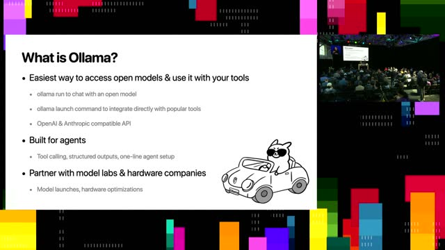
m05s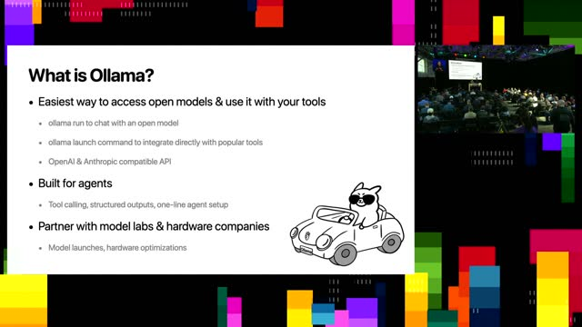
m10s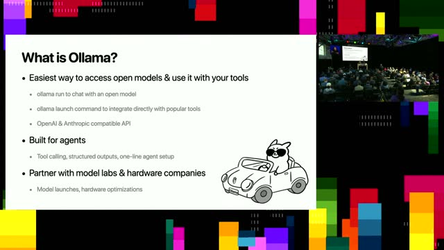
p05s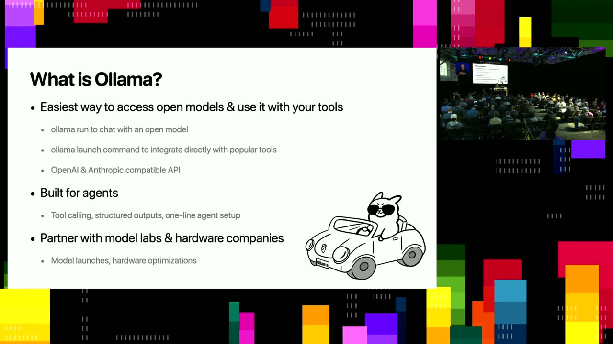
p10s) — A command that injects open models directly into existing tools such as Claude Code [inferred], VS Code, and GitHub Copilot, with one-line setup for agent harnesses. - Ollama Cloud (00:02:21
 m05s
m05s m10s
m10s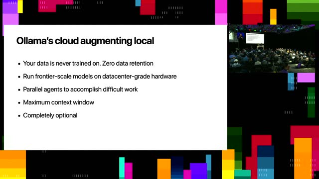
p05s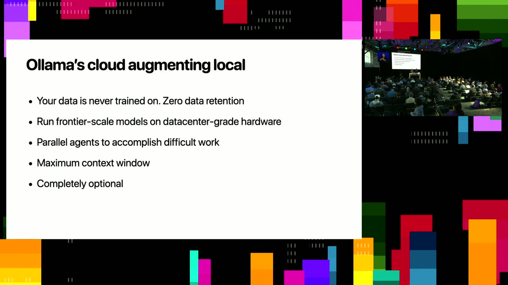
p10s) — An optional service introduced this year that runs frontier-grade open models on data-center hardware with zero data retention and no training on user data, for users lacking local compute. - Gemma availability on Ollama (00:02:06
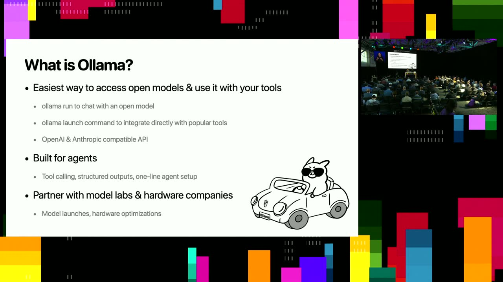
m05s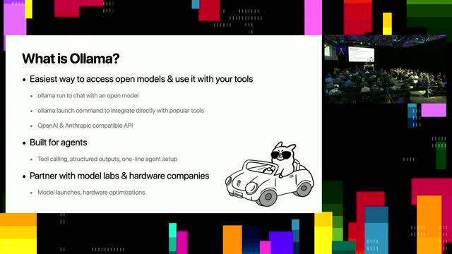
m10sp05sp10s) [inferred] — A newly announced Google DeepMind unified model is already available on Ollama for agentic applications the same morning as its release. - MLX inference engine (00:17:40
 m05s
m05s m10s
m10s p05s
p05s p10s) — A native Apple-device inference path (supporting NVFP4) offering faster performance than the previous engine when pulling MLX models from Ollama's registry.
p10s) — A native Apple-device inference path (supporting NVFP4) offering faster performance than the previous engine when pulling MLX models from Ollama's registry. - OpenAI and Anthropic API compatibility (00:01:17
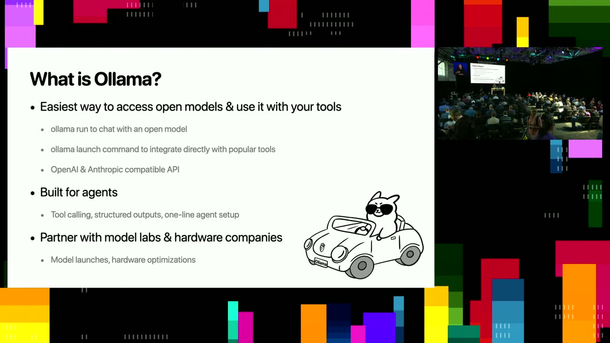
m05s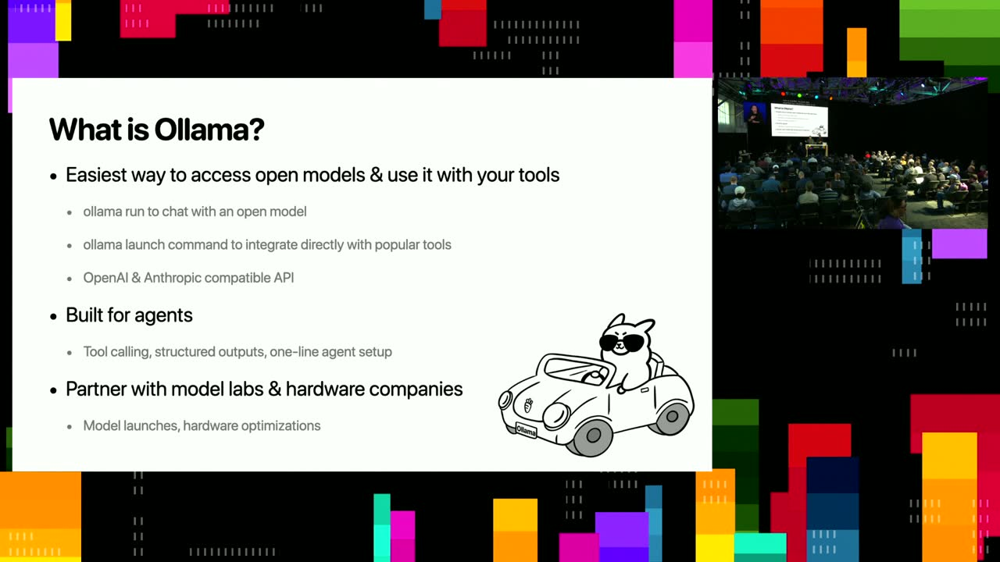
m10sp05sp10s) — Compatibility plus Python and JavaScript SDKs for developers building applications on open models.
{kind=link}
{kind=link}
{kind=link}
{kind=link}
{kind=link}
{kind=link}
{kind=link}
{kind=link}
{kind=link}
{kind=link}
{kind=link}
{kind=link}
{kind=link}
{kind=link}
Topics covered
- Hybrid local-cloud execution where cloud and local models share a near-identical workflow.
- Evolution of open models from chat to reasoning, tool calling, and long-horizon multi-hour tasks.
- Privacy-sensitive local workflows (processing a credit card statement, financial filings) where data never leaves the machine.
- Real-world deployments at research labs and enterprises, including a routing layer that selects between cloud models and Ollama.
- Hardware constraints: VRAM versus unified memory, quantization, context-window limits, and compaction during local agentic workloads.
- Model selection guidance for coding, scripting, and personal-agent use cases.
- Edge/mobile support status, including Qualcomm Snapdragon chipsets.
Notable quotes
"Ollama is really the easiest way for developers to access open models and use it with your own tools." — Michael Chiang
"So none of this information ever left my computer... local models are actually viable to do real work." — Parth Sareen
"We're not directly targeting mobile devices yet because we want to target the mainstream use cases for work." — Michael Chiang
Products and tools mentioned
- Ollama
- Ollama Launch
- Ollama Cloud
- Gemma (Google DeepMind) [inferred]
- Kimi K2 [inferred]
- Qwen 3 [inferred]
- gpt-oss-120b [inferred]
- GitHub Copilot CLI
- Claude Code [inferred]
- Codex [inferred]
- Droid [inferred]
- Pi (minimal harness)
- OpenClaw [inferred]
- Hermes
- MLX inference engine
- llama.cpp
- LangChain [inferred]
- NVFP4 quantization
- Qualcomm Snapdragon
- NVIDIA DGX Spark [inferred]
- AMD Strix Halo platform [inferred]
- Apple Silicon / unified memory
Speakers featured
- Michael Chiang — Co-founder, Ollama
- Parth Sareen — Agents engineer, Ollama
Follow-up resources
- Lawrence Berkeley National Laboratory — published work using Ollama with a routing layer between cloud models and Ollama for autonomous X-ray accelerator physics research.
- NASA Glenn Research Center — crew health performance probabilistic risk assessment categorizing Mars mission tasks into 18 human-system task categories.
- US Department of Energy / Brookhaven National Laboratory — Ollama integrated with LangChain [inferred] for natural-language log data analysis and summarization.
Frames
{kind=link}
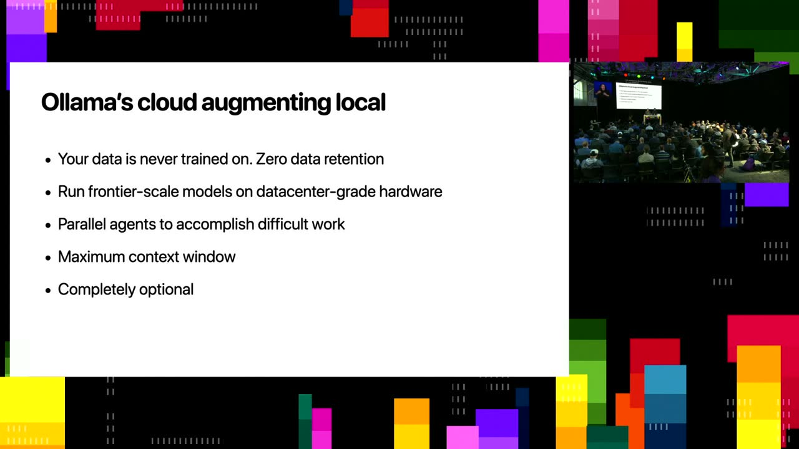
{kind=link}
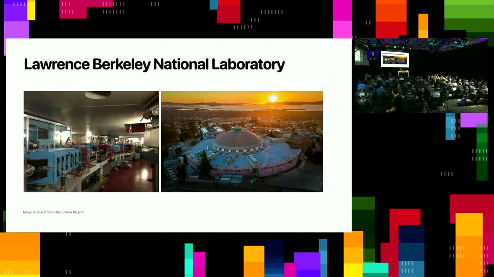
{kind=link}
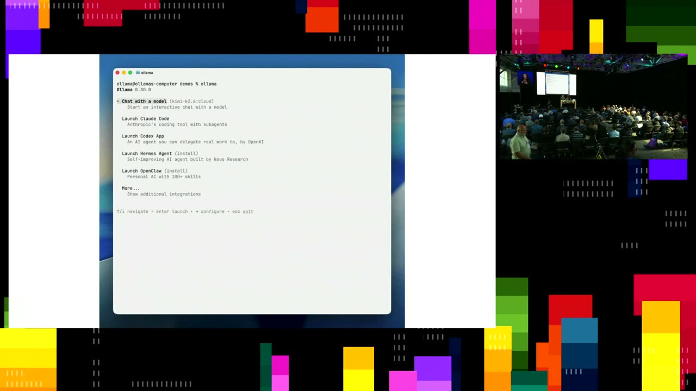
{kind=link}
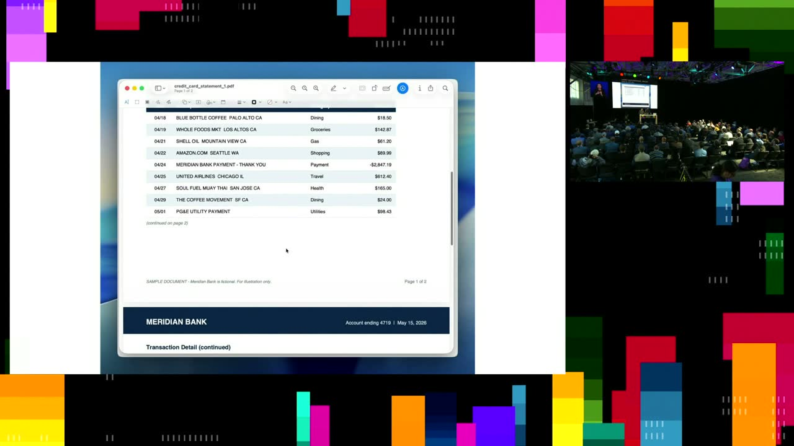
{kind=link}
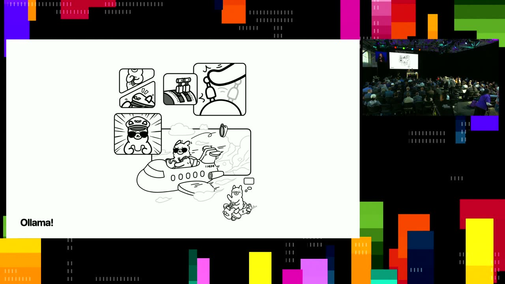
{kind=link}
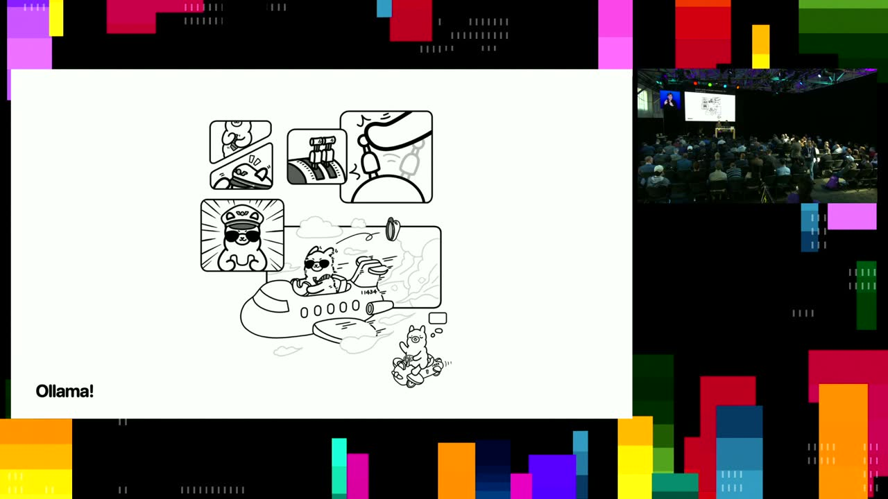
{kind=link}
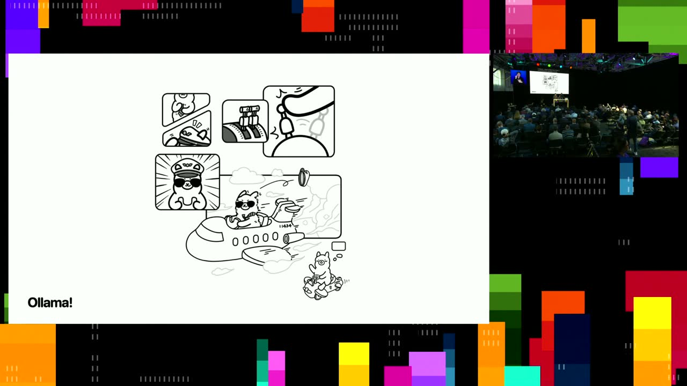
{kind=link}
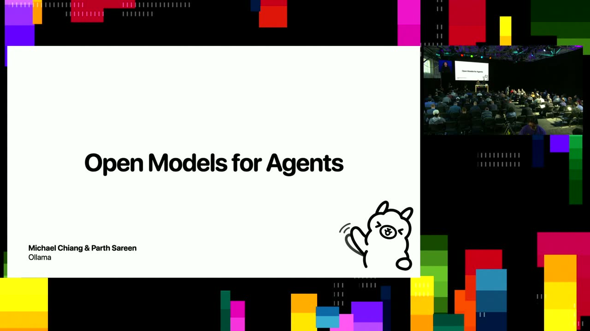


Transcript
Show / hide transcript (22,571 chars)
[00:00:01] Hey everyone, my name is Parth and I work on [00:00:05] agents at O Llama. [00:00:07] I'm Michael, one of the Co founders of O Llama. [00:00:09] And today we'll be talking about open models for agents [00:00:13] and how hybrid local cloud models are playing in together [00:00:17] to make agents a reality. [00:00:20] If you're having trouble listening to us or hearing us, [00:00:23] there's headsets at the back, so feel free to go [00:00:26] and grab one just as we get started. [00:00:29] Take it away. [00:00:30] Awesome, has anyone here heard about O Lama before? [00:00:34] Wow OK that's a quite a bit of people. [00:00:37] I'll still I'll go quick on the background, but what [00:00:41] is O Lama? [00:00:42] O Lama is really the easiest way for developers to [00:00:45] access open models and use it with your own tools. [00:00:49] O Lama is the easiest way in one command to [00:00:52] be able to run a model to just get started [00:00:55] by chatting with it. [00:00:56] Or recently we introduced this command O Lama Launch to [00:01:00] be able to integrate open models directly with your favorite [00:01:04] tools. [00:01:05] This could be clock code, VS Code, GitHub Copilot by [00:01:10] using O Lama Launch directly injecting the open models into [00:01:15] these harnesses. [00:01:17] And of course for developers building on top of these [00:01:20] open models, we have Open AI and Anthropic API compatibility [00:01:23] for you to build your own applications. [00:01:26] If you have Python or JavaScript applications, we also have [00:01:30] a great SDK for you to build up on top. [00:01:34] And O Lama since the beginning has been really built [00:01:37] for agents. [00:01:38] This means we specifically test O Lama for tool calling, [00:01:43] having structured outputs and have one line agent set up [00:01:47] for bringing all these models to O Llama platform. [00:01:51] And right now we have over 8 million active developers [00:01:55] using O Llama and we partner with major model labs [00:01:59] and hardware companies to continue to bring model launches and [00:02:03] hardware optimizations to O Llama. [00:02:06] So just this morning, Google DeepMind announced Jemma 412 B [00:02:10] unified model and it's already available on O Llama and [00:02:14] you can use it for your Agentech applications. [00:02:21] And recently starting this year, we added Olamas Cloud to [00:02:25] augment the local inference piece as well. [00:02:28] And this is a piece where your data is never [00:02:31] trained on it has zero data retention. [00:02:34] What it's meant to do is being able to run [00:02:37] Frontier models on data center grade hardware. [00:02:40] And this way, if you don't have the compute locally, [00:02:43] you're able to scale with Olama and continue to run [00:02:46] the models that you want. [00:02:49] And a lot of these use cases that are enabled [00:02:51] with O Llama are things like parallel agents to really [00:02:55] accomplish difficult work that you couldn't otherwise do with smaller [00:02:59] models. [00:03:00] And all these models come with the maximum contacts window [00:03:04] from the model providers themselves. [00:03:07] And this is, of course, completely optional service that you [00:03:10] can use with O Llama. [00:03:14] Now open models are quickly improving. [00:03:18] This is just one of the sweep bench verified for [00:03:22] illustration purposes. [00:03:24] But really the open models are enabling mainstream use cases [00:03:28] at significantly lower prices. [00:03:30] And we're seeing a lot of these mainstream use cases, [00:03:34] maybe not frontier research like DNA synthesis or frontier coding [00:03:39] applications. [00:03:41] Users with mainstream tasks are able to begin to use [00:03:44] these open models for. [00:03:45] And we'll show you demos of that and give real [00:03:48] life scenarios of where that's happening today and giving users [00:03:52] the flexibility to customize your models and run it with [00:03:56] the parameters that fit with your goals. [00:04:02] How open models have really improved capabilities and really evolved. [00:04:08] In the past, we've seen models really come with just [00:04:11] pure general chat. [00:04:13] And over the the months that followed, we really saw [00:04:17] models quickly evolving to having reason reasoning abilities to able [00:04:21] to start thinking. [00:04:23] And then models evolved to be able to pick up [00:04:26] individual tools and multiple tools. [00:04:29] And we're starting to see more open model labs become [00:04:33] beginning to release models that are capable of tackling long [00:04:38] horizon tasks. [00:04:39] So these are tasks that can run for hours and [00:04:43] and days. [00:04:44] And these are just starting to happen. [00:04:46] And so in the future, we should be beginning to [00:04:50] see much more of that unlock happening some of the [00:04:55] use cases that we've seen in real life and O [00:04:58] llamas really private. [00:05:00] So these are published papers that where a lot of [00:05:04] the users have talked about where they are publicly using [00:05:08] Olama, the Lawrence Berkeley National Laboratory. [00:05:11] They, they have an accelerator assistance system to autonomously execute [00:05:17] physics research for X-ray. [00:05:19] And they basically have a a routing layer that chooses [00:05:25] between cloud models and Olama in order to do their [00:05:30] inference. [00:05:31] And this is what their accelerator ultimately looks like. [00:05:35] And this is O Llama powering their X-ray research. [00:05:40] There's also the NASA Glenn Research Center. [00:05:43] They have a crew and health, crew health performance, probabilistic [00:05:47] risk assessment. [00:05:49] And they use O Llama to categorize a diverse set [00:05:51] of Mars mission tasks. [00:05:53] And they go into 18 predefined human system task categories [00:05:58] in order for their future missions. [00:06:03] the US Department of Energy with Brookhaven National Laboratory also [00:06:09] integrates Olama to facilitate log data analysis. [00:06:12] And this is one of their setup together with Lang [00:06:16] Chang that they use, allowing users to be able to [00:06:20] use a GUI to be able to do summaries of [00:06:23] their log information and retrieve specifics on the issues and [00:06:28] solutions through natural language. [00:06:34] And there are other developers in enterprises already using a [00:06:38] llama to automate their mission critical tasks. [00:06:41] For example, a multinational media company processes financial documents for [00:06:47] their quarterly earnings review and SEC filings and these are [00:06:51] very sensitive data to that they use and it just [00:06:55] cannot be sent to other cloud AI models or providers. [00:06:59] And this is where their use case for O Lama [00:07:02] lies. [00:07:02] A leading industry manufacturer has an assistant internally using O [00:07:07] Lama to design machine parts and this is all for [00:07:11] their Mechanical Engineers to do CAD Design Motive Automotive manufacturer [00:07:17] is using O Lama directly on the factory floor and [00:07:20] this is leveraging retrieval, augmented generation on their knowledge base [00:07:26] and inspection system for their factory technicians. [00:07:32] And we'd love to pass it to Parth for quick [00:07:35] demos on what a llama looks like. [00:07:38] Cool. [00:07:38] So I'll cover a bunch of different things that we [00:07:41] can do and hopefully you'll walk away with a better [00:07:45] sense of everything a llama can do for you now, [00:07:48] especially both local and cloud. [00:07:50] So one of the things that a lot of you [00:07:53] probably know us for is, you know, the classic bread [00:07:56] and butter chatting with a model. [00:07:58] So you can see here, a big focus that we [00:08:01] have is to focus on both local and cloud and [00:08:04] have the experience feel the exact same. [00:08:07] So you want to do a larger task, you want [00:08:09] to use a bigger model, you use cloud almost the [00:08:12] same way you would use a local model. [00:08:16] So as Michael mentioned, we introduced O Lama launch earlier [00:08:20] this year and essentially it's a way to connect to [00:08:23] all your favorite tools and applications for whatever you'd like [00:08:28] to do. [00:08:28] So we support personal agents like Open Claw, Hermes, as [00:08:32] well as a plethora of agentic harnesses to do coding [00:08:36] agents and coding work. [00:08:39] So here's a list, you know, we have plot code, [00:08:42] codecs, Copilot, CLI, Droid Pie, and many, many more and [00:08:47] many more are also coming. [00:08:50] So I'll show you a little bit about how it's [00:08:53] super easy to plug Olama into any of these favorite [00:08:56] tools that you may have, and I'll showcase Copilot in [00:09:00] this case. [00:09:03] So as I mentioned earlier, you just type Olama launch [00:09:06] Copilot and you can pick the model that you'd like. [00:09:10] So in this case, I'm using Kimi K 2.6 on [00:09:13] our cloud, but just as easily you can use a [00:09:16] local model as well. [00:09:18] And one of the things I really like about the [00:09:21] Copilot CLI is that you can directly pick which issues [00:09:23] you want to work on. [00:09:25] And so in this case, I'm like, OK, go and [00:09:27] fetch this issue. [00:09:28] Let's see you know what it's doing and let's come [00:09:31] up with a solution for it. [00:09:34] So thinking likes to think a lot sometimes and you [00:09:37] know, it's come up with exactly what's going on in [00:09:41] the issue. [00:09:42] And I can use this as part of my workflow [00:09:44] to directly without ever leaving my terminal and leveraging these [00:09:48] open models to do real work. [00:09:50] And this is a workflow that I often do in [00:09:52] my day-to-day. [00:09:54] So, you know, I ask, are there any open PRS [00:09:57] referencing? [00:09:57] It says no. [00:09:59] And then, you know, we start working on a fix. [00:10:01] And so any other agent harnesses that you've, you know, [00:10:04] used a lot of powers them similarly as well where [00:10:07] we make sure that the underlying technologies work, things like [00:10:11] sub agents, web search, etcetera. [00:10:13] So over here it's spun up multiple sub agents to [00:10:16] go and explore the code base and come up with [00:10:18] potential fixes. [00:10:20] Just skipping forward a little bit basically gives me a [00:10:24] little bit of a plan and then I can execute [00:10:26] on this plan and get my work done. [00:10:31] Another thing I feel is so critical is this idea [00:10:35] of hybrid execution. [00:10:36] So cloud models, especially the ones that we serve, which [00:10:41] are very, very close to frontier level intelligence, they are [00:10:45] awesome for your most difficult work when it comes to [00:10:49] coding or any other agentic tasks. [00:10:51] But there's a lot of stuff you want to be [00:10:53] extremely, extremely private for. [00:10:55] And this is a workflow that I often use in [00:10:58] my day-to-day or quarterly, as you'll see, which is my [00:11:01] credit card statement. [00:11:02] And so this is not my actual credit card statement. [00:11:05] That would be a little bit weird, but it is [00:11:07] a fake 1. [00:11:08] And so this is some, this is a pretty usual [00:11:10] workflow I'll do at the end of every month. [00:11:13] I'll basically go take my credit card statement and put [00:11:17] it into one of my favorite harnesses called π so [00:11:20] Π's a really minimal harness if you haven't heard about [00:11:23] it. [00:11:24] And it's perfect for local models as the entire point [00:11:28] is that it doesn't float the system prompt. [00:11:30] It keeps everything super minimal. [00:11:32] So in this case, I'm using Quant 3.6 running locally [00:11:35] on my MacBook. [00:11:36] And I'm basically going to say, you know, process this [00:11:40] statement and show me kind of how much I'm spending [00:11:44] whatever the different categories. [00:11:46] And so let's see it in action. [00:11:48] So this is running fully locally on my computer for [00:11:52] my most private and private use cases. [00:11:55] And in this case, it's able to write code to [00:11:58] process the PDF. [00:12:00] And now it's able to give me a little bit [00:12:02] of a spending breakdown because it's not processed that information. [00:12:06] Let's see, it's doing a bit of math to figure [00:12:11] out exactly what's going on and then there we go. [00:12:16] So none of this information ever left my computer. [00:12:19] It's been here. [00:12:20] Seems like I'm spending a lot on travel. [00:12:22] I guess I'm overdue for another vacation. [00:12:26] But I think it's really, really useful to be able [00:12:28] to have this level of like good enough. [00:12:30] And a big thing we've seen over the last few [00:12:34] months is that you truly have this idea where local [00:12:38] models are actually viable to do real work. [00:12:42] And another really cool thing that I personally really like [00:12:46] using is using local models for personal harnesses. [00:12:49] So personal agents like Hermes and open Claw because none [00:12:52] of your information ever leaves and you can kind of [00:12:56] start feeding it information. [00:12:58] Everything's living on your computer anyways. [00:13:01] And so I'd love to show you open claw. [00:13:03] One of the cool things that we can do with [00:13:07] open Claw is install it for you. [00:13:10] And so this is like a complete end to end [00:13:11] setup. [00:13:12] I wrote, oh, Llama launch open claw ran it. [00:13:15] It's installing open Claw lets me choose a model and [00:13:20] gets me set up right with it. [00:13:23] And so within like 30 seconds, I'm able to go [00:13:26] from absolutely nothing installed to and running open client since [00:13:30] ready to do my work for me. [00:13:35] Cool And with that, we'd like to open up the [00:13:39] floor for any questions that you may have around local [00:13:44] cloud O llama. [00:13:47] So welcome to come up to the mic and then [00:13:49] we'll also hang around after as well. [00:13:56] Hello stops working. [00:13:58] I was wondering since the focus is on this part [00:14:01] of the focus was on running on device. [00:14:04] Sorry. [00:14:04] Would you be able to speak louder? [00:14:06] Sure, I'll try. [00:14:08] So I was wondering some part, since part of the [00:14:11] focus is on running on the device itself, what are [00:14:14] your thoughts on at the edge devices like mobile phones [00:14:18] or smaller systems that may not have the same power [00:14:21] as a laptop? [00:14:25] Sorry, just to repeat the question, did you mean what [00:14:28] type of models are good for different systems? [00:14:32] Not necessarily what type of models, but specifically if there [00:14:36] are plans to have all LAMA integrations directly at the [00:14:40] edge for again maybe iPhones or Android devices that may [00:14:43] not have the same power as your regular Mac. [00:14:47] Yeah, we haven't targeted mobile devices yet. [00:14:50] There are people who have experimenting, been experimenting, bringing Olama [00:14:54] on mobile devices and it it does run. [00:14:57] So Olama's absolutely enabled on Qualcomm Snapdragon devices and it's [00:15:01] the same chipset that runs on mobile. [00:15:03] And we have seen users do that. [00:15:06] We're not directly targeting mobile devices yet because we want [00:15:09] to target the mainstream use cases for work. [00:15:13] Thank you. [00:15:17] Any other questions, feel free to hop onto the mic [00:15:19] or raise your hand and we'll guide you over. [00:15:22] Do you want to drop to the mic? [00:15:29] Yeah. [00:15:30] Can you talk a little bit about VRAM and unified [00:15:33] RAM and sort of model sizes context windows? [00:15:38] I saw that at least in the demo, you had [00:15:41] a 262K context window. [00:15:43] What kind of a machine do you have? [00:15:44] And you know, what are the specs? [00:15:46] Yeah. [00:15:46] Is it a quantized model? [00:15:48] For sure. [00:15:48] So obviously like in a llama, we have a default [00:15:51] quantization that we recommend for most things. [00:15:55] And now we also have support for MLX where we [00:15:58] actually run NVFP 4. [00:16:00] And with all that, I have a Max out Max [00:16:03] so I can run a full context length, especially with [00:16:06] a smaller model and get, you know, most of my [00:16:08] work done and not really have to worry about compaction [00:16:11] as much. [00:16:12] Because what tends to happen as soon as you're running [00:16:15] agentic workloads locally is you start running into being hardware [00:16:19] constraint where you can't support the maximum context length. [00:16:23] So unified memory is great in the sense that it [00:16:26] lets you have larger context lengths with a slight trade [00:16:29] off of that speed that you would get on, you [00:16:32] know, a CUDA card, for example. [00:16:35] But at the same time, you get to work a [00:16:38] lot more with a larger memory, so you get to [00:16:41] support harder and harder tasks. [00:16:43] And I'm sure that as you know, time goes on, [00:16:45] even unified memory will get better in terms of performance [00:16:48] and speed. [00:16:50] On the hardware front, we've been seeing most of the [00:16:53] hardware partners are getting into unified memory started with Apple, [00:16:57] NVIDIA and Microsoft just announced RTX Spark that has unified [00:17:01] memory up to 128 gigabytes. [00:17:03] Of course, AMD has the strict, say, Halo platform that [00:17:07] also can go up to 128 gigabytes I believe. [00:17:10] And and so we're seeing across the board different hardware [00:17:13] teams moving towards unified memory. [00:17:18] Hey, building on Apple Silicon devices, building on device platform [00:17:25] for models that are running on iPhone and Mac OS [00:17:30] and Fission Pro also watch OS. [00:17:34] Tried alarm a couple weeks back. [00:17:37] Are you still using Llama CPP under the hood? [00:17:40] Any plan to build your own inference engine by the [00:17:44] way? [00:17:45] So we do have our own MLX inference engine. [00:17:49] So if you are on an Apple device, highly recommend [00:17:52] using that one just because you got like faster performance. [00:17:56] And for that you just need to pull one of [00:17:59] the MLX models from our model registry. [00:18:03] Thank you. [00:18:07] Any other questions? [00:18:09] Yeah, yeah, sure. [00:18:17] So the question was what's the best coding model on [00:18:22] 128 GB MacBook? [00:18:24] Honestly, one of my favorites is 1362070 if I'm remembering [00:18:28] correctly, as well as Gemma. [00:18:31] I kind of use them in pairs to go and [00:18:34] write like smaller scripts for me for the most part. [00:18:39] Honestly like a little bit underrated, but even the GB2SS120B [00:18:43] works really well for doing scripting and other tasks. [00:18:51] Awesome, I. [00:18:52] Was going to add the Gemma 4 dense models are [00:18:55] actually really performant. [00:18:59] And you'd be able to run them on a full [00:19:00] context length as well. [00:19:07] Yeah. [00:19:07] So, so the question is like how do you choose [00:19:10] which model to use? [00:19:12] It really depends on kind of your task for coding. [00:19:16] You know, different models will perform better versus like personal [00:19:19] agents sometimes or you know, even if you're just using [00:19:22] for like a chat use case or classification for whatever [00:19:25] reason. [00:19:26] And a big way that I recommend people to go [00:19:29] about choosing a model is honestly like trying a bunch [00:19:33] out. [00:19:33] We're going to start doing better recommendations in terms of, [00:19:37] you know, if you're using a certain harness of as [00:19:40] part of a llama launch, you'd be able to see [00:19:42] kind of which are the up and date models which [00:19:45] you can use best for your system as well. [00:19:48] But for the most part, if you're building like a [00:19:51] bespoke app, then the best thing you can do is [00:19:53] try a bunch out, benchmark it and see which one [00:19:55] you prefer the most. [00:19:59] And I think with that, well. [00:20:01] Conclude the session. [00:20:02] We're going to hang around for a while. [00:20:04] Come chat with us. [00:20:05] We have a bunch of stickers to give away. [00:20:07] Thank you. [00:20:08] Thank you.